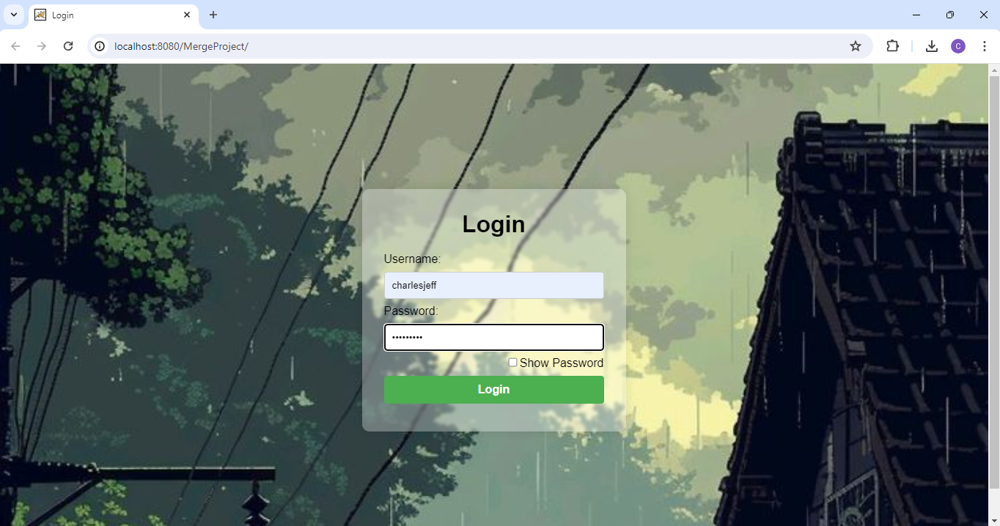
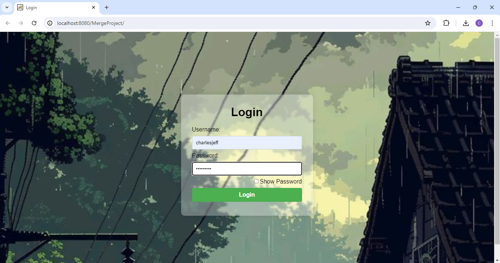

Introduction
The project aims to design a Java and HTML merger system to create a powerful and secure website. Java serves as the back-end for data processing and logical operations, while HTML functions as the front-end, handling website layout and content display directly in users' web browsers. CSS enhances the visual appearance, and JavaScript provides interactivity, ensuring a satisfying user experience.
Scope and Limitation
The project includes developing a Java login application and a basic HTML "About Me" webpage. It focuses on integrating Java and HTML to create a visually appealing and secure website intended for localhost use. Limitations include inexperience and potential monotony, which may impact security and feature richness.
Purpose
The project aims to provide practical knowledge to computer engineering students by demonstrating offline web application development. The Java Login App implements user login systems and server-side authentication techniques to build foundational concepts. It aims to enhance understanding of secure web application development and preparation for real-world scenarios.
Overall Description
The project develops a beginner-friendly login application using Java for back-end logic and HTML for front-end presentation. It serves as an educational tool for students to learn both front-end and back-end development, focusing on security and user experience.
Analysis
The project's objective is to create a secure, user-friendly login application using Java and HTML. It includes input validation for usernames and passwords, dynamic content generation on successful login, and interactive button functionalities for immediate output display.
Input Requirements
- Username: User-provided input, validated for required format (e.g., alphanumeric).
- Password: User-provided input, validated for security criteria (e.g., minimum length).
Output Requirements
- Successful Login: Redirect to the home page with interactive buttons.
- Failed Login: Display an alert for incorrect credentials and prevent access.
- Button Interactivity: Prompt user input and display immediate output on button click.
Design
The web application design leverages Java for back-end logic and HTML for front-end interface, ensuring continuity and user interaction. The login interface and home page feature dynamic elements crafted using HTML, enhancing visual appeal and functionality.
Implementation
The implementation involves using Apache Tomcat to integrate Java back-end with HTML front-end via JavaServer Pages (JSP). Servlets manage request and response operations, enabling dynamic content generation and server-side processing for robust performance.
Future Development
In future phases, plans include database integration for secure user data storage, advanced security mechanisms (encryption, MFA), responsive design for mobile compatibility, and enhanced user management features (password reset, user roles).
 
Back